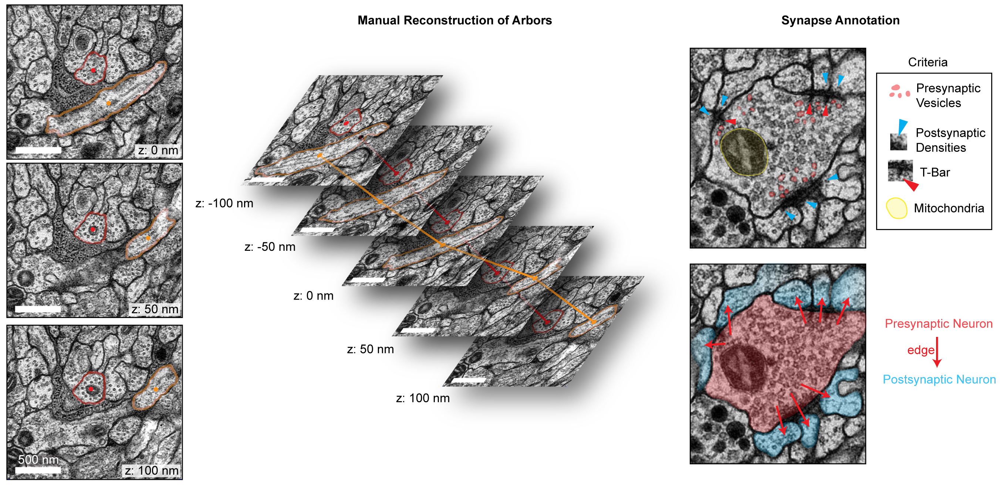
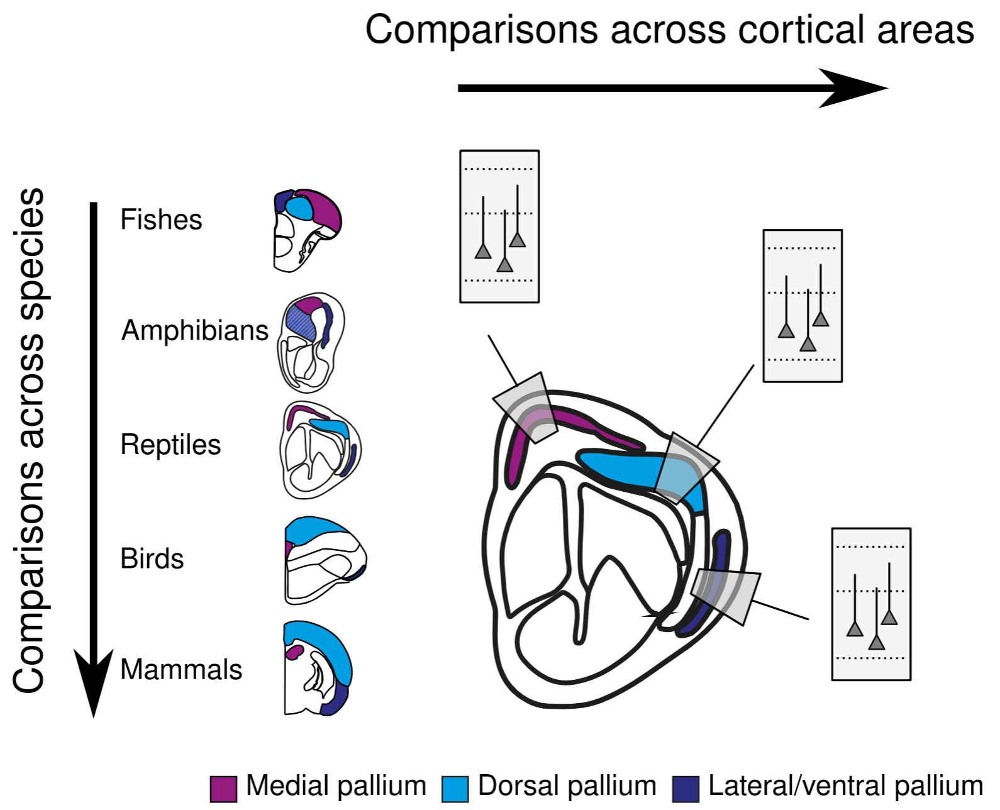
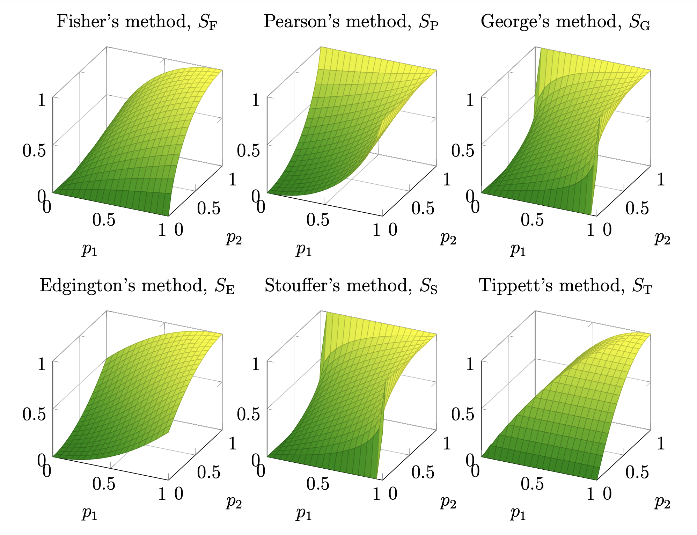
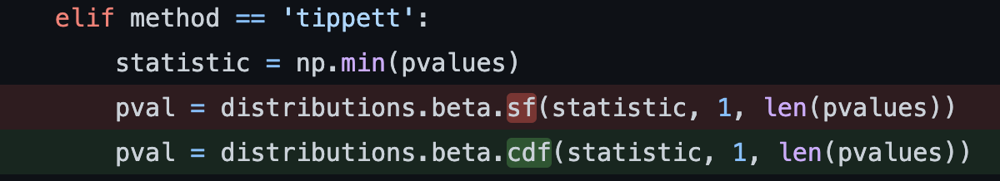
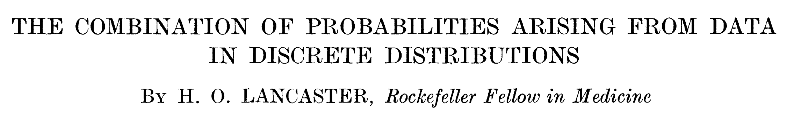

A statistical analysis of bilateral symmetry in an insect connectome
Contents
A statistical analysis of bilateral symmetry in an insect connectome¶
Benjamin D. Pedigo¶
Johns Hopkins University NeuroData lab @bdpedigo (Github) @bpedigod (Twitter) bpedigo@jhu.edu

My requests¶
Feedback, feedback, feedback
Especially with figures
Electron microscopy connectomics¶

Why are we talking about maggot brain?¶
Drosophila larva (AKA a maggot) brain connectome¶
First whole-brain, single-cell connectome of any insect
~3000 neurons, ~544K synapses
Both hemispheres of the brain reconstructed

We’re just going to consider this to be a network¶
.png)
Why bilateral symmetry?¶
We examined the connectivity of members of left–right homologous neuron pairs onto left–right homologous targets in the nerve ring of the hermaphrodite reconstruction to assess the amount of natural variability in connectivity. … Differences between individual worms will be expected to be at least this large. This information is used in the following section to identify sex differences.
In both sexes, the gustatory neuron ASEL (that is, the left neuron of the pair) has greater chemical connectivity than ASER (that is, the right neuron of the pair) to the olfactory neuron class AWC. The ASEL–ASER pair is known to be lateralized in its ability to sense chemosensory cues
Many connectomics questions require comparison¶
Connectomes across development¶

Connectomes across evolution, cortex¶

So, studying bilateral symmetry here lets us¶
Try to formalize what we even mean by this property, and make claims about what we find in this connectome, and
Test out methods for comparing networks for these future pursuits
Are these populations the same?¶
Known as two-sample testing
\(\color{#66c2a5} Y^{(1)} \sim F^{(1)}\), \(\color{#fc8d62} Y^{(2)} \sim F^{(2)}\)
\(H_0: \color{#66c2a5} F^{(1)} \color{black} = \color{#fc8d62} F^{(2)}\)
\(H_A: \color{#66c2a5} F^{(1)} \color{black} \neq \color{#fc8d62} F^{(2)}\)

Are these two networks the same?¶
Want a two-network-sample test!
\(A^{(L)} \sim F^{(L)}\), \(A^{(R)} \sim F^{(R)}\)
\(H_0: \color{#66c2a5} F^{(L)} \color{black} = \color{#fc8d62}F^{(R)}\)
\(H_A: \color{#66c2a5} F^{(L)} \color{black} \neq \color{#fc8d62} F^{(R)}\)

Assumptions¶
We know the direction of synapses, so network is directed.
For simplicity (for now), consider networks to be unweighted.
For simplicity (for now), consider the left \(\rightarrow\) left and right \(\rightarrow\) right (ipsilateral) connections only.
Not going to assume any nodes are matched

Density-based testing: Erdos-Renyi (ER) model¶

We detect a difference in density¶

p-value < \(10^{-22}\)
Group-based testing: stochastic block model (SBM)¶


We detect a difference in group-to-group connection probabilities¶

After multiple comparison, find 5 group-to-group connections which are significantly different
Combine (uncorrected) p-values (like a meta-analysis), leads to p-value for overall test of \(<10^{-7}\)
A massive aside¶
Combining p-values: nobody’s perfect¶

Combining p-values: don’t trust scipy¶

Distribution under the null for combining p-values¶

Combining p-values: be careful with discreetness¶


\(\leftarrow\) We are trying to approximate this null distribution with something continuous \(Uniform(0,1)\)


Back to the main thread…¶
Should we be surprised?¶
Already saw that even the overall densities were different
For all significant comparisons, probabilities on the right hemisphere were higher
Maybe the right is just a “scaled up” version of the left?
\(H_0: \color{#66c2a5}B^{(L)} \color{black} = c \color{#fc8d62}B^{(R)}\)
where \(c\) is a density-adjusting constant, \(\frac{\color{#66c2a5} p^{(L)}}{\color{#fc8d62} p^{(R)}}\)

Adjusting for a difference in density¶

Even with density adjustment, we detect a difference¶


So the Kenyon cells are the only group with remaining differences…¶

ER test: \(p <10^{-26}\)
SBM test: \(p \approx 0.0027\)
Adjusted SBM test: \(p \approx 0.43\)
To sum up…¶
Model |
\(H_0\) (vs. \(H_A \neq\)) |
KC |
p-value |
Interpretation |
|---|---|---|---|---|
ER |
\(\color{#66c2a5} p^{(L)} \color{black} = \color{#fc8d62}p^{(R)}\) |
+ |
\(<10^{-23}\) |
Reject densities the same |
SBM |
\(\color{#66c2a5} B^{(L)} \color{black} = \color{#fc8d62} B^{(R)}\) |
+ |
\(< 10^{-7}\) |
Reject group connection probabilities the same |
aSBM |
\(\color{#66c2a5}B^{(L)} \color{black} = c \color{#fc8d62}B^{(R)}\) |
+ |
\(\approx 0.0016\) |
Reject above even after accounting for density |
ER |
\(\color{#66c2a5} p^{(L)} \color{black} = \color{#fc8d62}p^{(R)}\) |
- |
\(<10^{-26}\) |
Reject densities the same (w/o KCs) |
SBM |
\(\color{#66c2a5} B^{(L)} \color{black} = \color{#fc8d62} B^{(R)}\) |
- |
\(\approx 0.0027\) |
Reject group connection probabilities the same (w/o KCs) |
aSBM |
\(\color{#66c2a5}B^{(L)} \color{black} = c \color{#fc8d62}B^{(R)}\) |
- |
\(\approx 0.43\) |
Don’t reject above after density adjustment (w/o KCs) |
Extensions¶
But you threw out all of the edge weights!¶


In summary…¶
We studied simple ways of framing a network two sample test, and proposed test procedures for each
We found that it can be important to “mod out” by other simple network statistics if you don’t care about them (like density)
We found that all of these tests find the left and the right hemispheres to be significantly different, unless you ignore Kenyon cells and adjust for the difference in density
The tests proposed here provide a foundation for future principled comparisons of connectomes


This work:¶

Acknowledgements¶
Johns Hopkins University¶
Mike Powell, Eric Bridgeford, Carey Priebe, Joshua Vogelstein, Kareef Ullah, Diane Lee, Sambit Panda, Jaewon Chung, Ali Saad-Eldin, NeuroData lab
University of Cambridge / MRC Laboratory of Molecular Biology¶
Michael Winding, Albert Cardona, Marta Zlatic, Chris Barnes
Microsoft Research¶
Hayden Helm, Dax Pryce, Nick Caurvina, Bryan Tower, Patrick Bourke, Jonathan McLean, Carolyn Buractaon, Amber Hoak
Questions?¶